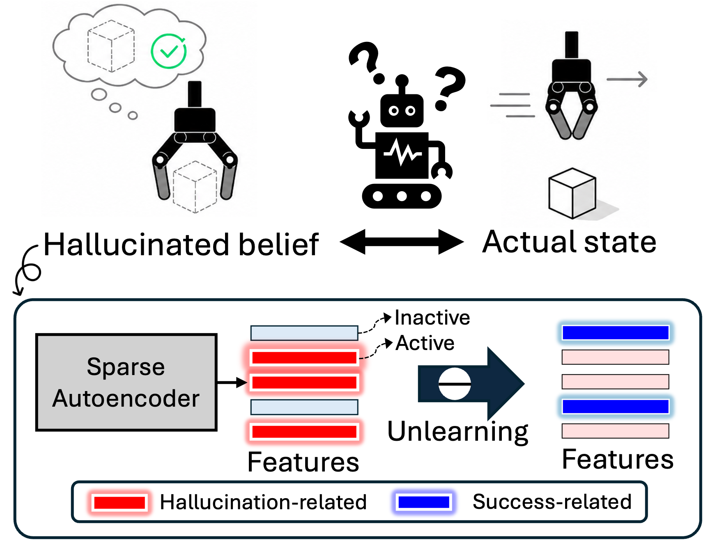
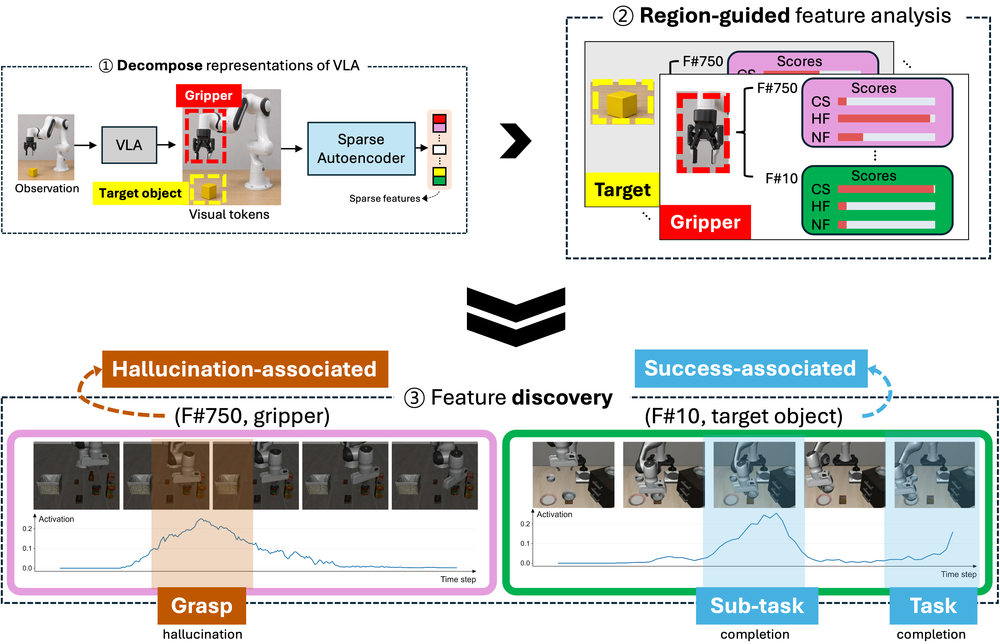
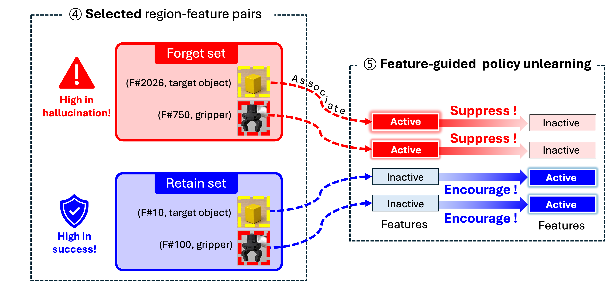

Sparse Feature Policy Unlearning Mitigates State Hallucination in Vision-Language-Action Models
SOUL — Sparse feature pOlicy UnLearning
* Corresponding authors
We identify sparse features associated with state hallucination in VLAs.
Building on this analysis, SOUL selectively unlearns hallucination-associated policy knowledge
while preserving successful manipulation behaviors.

Abstract
We study state hallucination, a recurring failure pattern in which a VLA continues acting as if an unrealized robot-object state had been achieved.
Our analyses find that state hallucination coincides with weakened attention to task-relevant visual regions, and a mechanistic interpretation via sparse autoencoders reveals that hallucination-associated sparse features are activated when these failures occur. Based on this analysis, we propose SOUL (Sparse feature pOlicy UnLearning), which selectively unlearns policy knowledge associated with state hallucination behaviors, where sparse features identified from hallucination failures and successful behaviors serve as explicit forgetting and retention targets, respectively.
Experiments across VLA architectures in simulated and real-world environments show that our method substantially reduces hallucinated failures and improves task success without substantially compromising the existing manipulation capabilities. These results suggest that interpretable feature analysis provides a practical basis for selectively modifying undesirable knowledge in robot policies.
State Hallucination
State hallucination occurs when a VLA acts based on an incorrect implicit belief about the robot-object state.
Grasping, Transporting, Placing
Grasping, Transporting, Placing
Grasping, Transporting, Placing
Grasping
Transporting
Prematurely closes the gripper while still approaching the object.
Moves as if carrying the object, although the gripper is empty.
Releases at the target location as if an object were held.
Method
Discover sparse features associated
with hallucination and success execution,
then selectively suppress hallucination
features while preserving sucess-relevant ones.

1. Feature Discovery. 1 Decompose VLA representations into sparse features, 2 analyze their activations over semantic visual regions, and 3 discover hallucination-relevant and success-relevant features.

2. Feature Unlearning. 4 Select forget and retain region-feature pairs, and 5 update the policy to suppress hallucination features while preserving success features.
Experiment videos
Benchmark
Real-world
BibTeX
@article{lee2026sparse,
title={Sparse Feature Policy Unlearning Mitigates State Hallucination in Vision-Language-Action Models},
author={Lee, Jiho and Park, Jeongeun and Choi, Heayoun and Kim, Taekyung and Kim, Eunwoo},
journal={arXiv preprint arXiv:2610.09496},
year={2026}
}